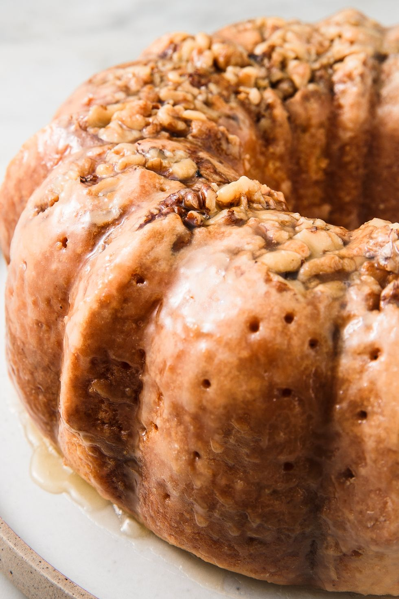

What is Rum cake?
Popular in the Caribbean, rum cake is a vanilla cake that has rum in the batter. Traditionally, dried fruit is soaked in rum for months and then added to the cake batter, but we have a more accessible homemade version.
Does rum cake get you drunk?
Hah! Don't we all wish?! We put 1/2 cup of rum in the cake batter and another 1/3 cup in the glaze, so it likely will not get you drunk after the alcohol bakes off, but it might be best to not let the kids have a taste of this :)
Ingredients
For the cake
- Enriched flour
- 1 cu of chopped walnuts or pecans
- 1 box of betty crocker yellow cake mix.
- (3.4-oz.) package instant vanilla pudding
- 4 large eggs
- 1/2 cup of salted butter - melted
- 1/2 cup of water
- 1/2 cup of dark Rum
For the glaze
- 1/2 cup of butter
- 3/4 cup sugar
- 1/3 cu dark rum
- 1/4 cup of water
Instructions
- Preheat oven to 350° and grease and flour a bundt pan. Add chopped walnuts to bottom of pan.
- In a large bowl, whisk together cake mix and pudding mix. Add eggs, melted butter, water, and rum and mix until combined.
- Pour batter into bundt pan and bake until a toothpick inserted in the middle comes out clean, 1 hour. Let cool 10 minutes then invert onto a cooling rack
- While cake is still warm, make glaze: In a medium saucepan over medium heat, melt butter, sugar, rum, and water. Let boil for 5 minutes.
- Poke cake all over with a toothpick then brush cake with glaze. Let glaze soak in and repeat until you have used all glaze.
Enjoy!
Return to top
Back